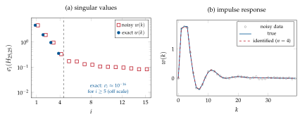

Chapter 7Towards subspace identification: the Ho–Kalman realization
We now move towards state-space models, i.e. methods that allow one to estimate LTI discrete-time state-space models directly from data. The first step is a classical deterministic realization methodology: the Ho–Kalman method, which produces an exact state-space model starting from a particular kind of input–output data, the impulse response (B. L. Ho and R. E. Kalman, “Effective construction of linear state-variable models from input/output functions”, 1966 [9]). Its SVD-based version, due to Kung [10], contains all the ideas of the subspace methods of Chapter 8.
The problem is: given \(N\) input–output samples \(\{u(k),y(k)\}_{k=0}^{N-1}\), find \(\{A,B,C,D\}\) for the system, up to a change of coordinates. What we are starting from is the impulse response of the system (a black-box LTI model, initially at rest, \(x(0)=0\), excited by \(u(k)=\delta(k)\)).
7.1 The SISO case
Let us start from the SISO case, \(p=q=1\):
With \(u(k)=\delta(k)\) (\(\delta(0)=1\), \(\delta(k)=0\) otherwise) and \(x(0)=0\) the output is the impulse response
The training dataset is \(\{\delta(k),w(k)\}_{k=0}^{N-1}\), and we want \(\{\delta(k),w(k)\}_{k=0}^{N-1}\mapsto\{A,B,C,D\}\) up to a change of coordinates. Obviously \(w(0)=D\), while \(w(k)=CA^{k-1}B\) for \(k>0\) (the Markov parameters).
The Hankel matrix of the impulse response. Arrange the Markov parameters in the Hankel matrix (constant along the anti-diagonals)
Here \(s\) (number of rows) and \(\ell\) (number of columns) are two parameters that can be chosen by the user, with \(s+\ell-1\le N-1\) (i.e. \(s+\ell\le N\)) so that all the entries are available, but with the assumption that
where \(n\) is the (unknown) order of the minimal system. (The strict inequality \(s>n\) is needed for the computation of \(A\) below; choosing \(s=\ell\) gives a “symmetric” Hankel matrix and, with the balanced choice below, a balanced realization.) The fundamental observation is that the Hankel matrix factorizes:
where \(\Obs_s\) is the extended observability matrix and \(\Rch_\ell\) the extended reachability matrix. If the system is minimal (reachable and observable) and \(s,\ell\ge n\), then \(\rank(\Obs_s)=n\) and \(\rank(\Rch_\ell)=n\) (Appendix A). Sylvester’s inequality for the rank of the product of two matrices (Lemma 2.12) gives, in our case,
The Hankel matrix of impulse-response samples has rank equal to the order of the minimal system (which produced the impulse response), and by Corollary 2.13 \(\Im(H_{s,\ell})=\Im(\Obs_s)\).
Factorizing via the SVD. Take the SVD of \(H_{s,\ell}\): since its rank is \(n\),
with \(U_n\in\R^{s\times n}\), \(\Sigma_n\in\R^{n\times n}\), \(V_n\in\R^{\ell\times n}\) all of rank \(n\), and \(\Im(\Obs_s)=\Im(U_n)\) (because \(\rank(\Obs_s)=\rank(U_n)=n\)). The factorization (7.2) is not unique: for any nonsingular \(T\),
are the extended observability and reachability matrices of the equivalent system with matrices \(T^{-1}AT\), \(T^{-1}B\), \(CT\), \(D\), and \(H_{s,\ell}=(\Obs_sT)(T^{-1}\Rch_\ell)\). Now observe that
and every choice corresponds to a different state basis. A balanced choice is
Extracting the system matrices. Since \(L=\Obs_s\) and \(P=\Rch_\ell\) (up to the same change of coordinates, which we now drop from the notation),
so that \(C\) is the first row of \(L\) and \(B\) is the first column of \(P\):
(MATLAB notation: first row and all columns; all rows and first column). To understand how to extract \(A\), have a look at \(L\). For instance with \(s=3\), \(L=\bmat{C\\CA\\CA^2}\) and \(\bmat{C\\CA}A=\bmat{CA\\CA^2}\). In general, defining
(\(L\) without its last row, and without its first row) we have the shift-invariance property
where \(L^{\up}=\Obs_{s-1}\) has full column rank \(n\) because \(s-1\ge n\).
Input: impulse response samples \(\{w(0),\dots,w(N-1)\}\); \(s,\ell\) with \(s>n\), \(\ell\ge n\), \(s+\ell\le N\).
\(D=w(0)\).
Build the Hankel matrix \(H_{s,\ell}\) in (7.1); from the theory \(\rank(H_{s,\ell})=n\).
Compute the SVD \(H_{s,\ell}=U_n\Sigma_nV_n\T=U_n\Sigma_n^{1/2}\,\Sigma_n^{1/2}V_n\T\).
Define \(L=U_n\Sigma_n^{1/2}\) (\(=\Obs_s\) up to a change of coordinates) and \(P=\Sigma_n^{1/2}V_n\T\) (\(=\Rch_\ell\) up to the same change of coordinates).
\(C=L(1,:)\), \(\;B=P(:,1)\), \(\;A=(L^{\up})\pinvsym L^{\dn}\) with \(L^{\up}=L(1\!:\!s-1,:)\), \(L^{\dn}=L(2\!:\!s,:)\).
Let \(w(0)=0\) and \(w(k)=0.5^{k-1}\) for \(k\ge1\) (so \(D=0\)). With \(s=\ell=2\), \(H_{2,2}=\bmat{1&0.5\\0.5&0.25}\) has rank one (\(n=1\)), \(\sigma_1=1.25\) and \(u_1=v_1=\tfrac1{\sqrt5}(2,1)\T\). Then \(L=u_1\sqrt{\sigma_1}=(1,0.5)\T\), \(P=\sqrt{\sigma_1}v_1\T=(1,0.5)\), so \(C=1\), \(B=1\), and \(L^{\up}A=L^{\dn}\) reads \(1\cdot A=0.5\): \(A=0.5\). Indeed \(CA^{k-1}B=0.5^{k-1}\).
7.2 The MIMO case
What about the MIMO case, with \(p\) inputs and \(q\) outputs? Now
where \(w_{ij}(k)\) is the impulse response observed on the \(i\)-th output for an input whose \(j\)-th component is \(\delta(k)\) and all the others are zero (so \(p\) impulse experiments, or one experiment per input channel, are needed). Then \(D=W(0)\) and the block Hankel matrix
still factorizes as
and Sylvester’s inequality still applies with no change: \(\rank(H_{s,\ell})=n\). The matrices \(L\) and \(P\) now have a block structure:
so \(C\) is the first block row of \(L\) (\(q\) rows), \(B\) the first block column of \(P\) (\(p\) columns), and the shift invariance acts on block rows. The SISO algorithm is the special case \(p=q=1\) of the following one.
Input: Markov parameters \(\{W(0),\dots,W(N-1)\}\), \(W(k)\in\R^{q\times p}\); \(s>n\), \(\ell\ge n\), \(s+\ell\le N\).
\(D=W(0)\).
Build the block Hankel matrix \(H_{s,\ell}\in\R^{sq\times\ell p}\) and compute its SVD \(H_{s,\ell}=U_n\Sigma_n^{1/2}\,\Sigma_n^{1/2}V_n\T\) (inspect the singular values to choose \(n\)).
\(L=U_n\Sigma_n^{1/2}\) (\(=\Obs_sT\)), \(\;P=\Sigma_n^{1/2}V_n\T\) (\(=T^{-1}\Rch_\ell\)).
\(C=L(1\!:\!q,:)\), \(\;B=P(:,1\!:\!p)\).
\(A=(L^{\up})\pinvsym L^{\dn}\), with \(L^{\up}=L(1\!:\!(s-1)q,:)\) and \(L^{\dn}=L(q+1\!:\!sq,:)\), from \(\bmat{C\\ \vdots\\ CA^{s-2}}A=\bmat{CA\\ \vdots\\ CA^{s-1}}\).
Remark 7.1. In the MIMO case the conditions \(s>n\), \(\ell\ge n\) are sufficient but not necessary: it is enough that \(\Obs_{s-1}\) and \(\Rch_\ell\) have rank \(n\), i.e. that \(s-1\) and \(\ell\) are at least the observability and reachability indices of the system, which can be much smaller than \(n\) when \(q,p>1\).
7.3 Noisy impulse responses: SVD truncation
Little tweaks to the standard Ho–Kalman method make it usable with real data. If the samples \(w(0),\dots,w(N-1)\) are (slightly) affected by errors, \(D=w(0)\) will contain some error, and you cannot be sure that \(\rank(H_{s,\ell})=n\): in general the noisy Hankel matrix has full rank. Still, since we have to work on \(H_{s,\ell}\) using the SVD, we inspect the singular values of \(H_{s,\ell}\) and try to estimate what the most likely order of the true system is (Section 3.4). If, say, \(\sigma_1,\dots,\sigma_5\) are large and \(\sigma_6\approx\sigma_7\approx\cdots\approx0\), you can assume that you are not going to have huge errors estimating a fifth-order model: truncate the SVD to \(n=5\) and proceed with the algorithm. By Theorem 3.2, \(U_n\Sigma_nV_n\T\) is the best rank-\(n\) approximation of the noisy Hankel matrix. (It is no longer exactly Hankel, which is why the realization is only approximate.)
Consider the fourth-order SISO system
with poles \(0.6\pm0.5j\), \(0.9\), \(-0.5\). The first \(60\) Markov parameters are corrupted by white noise with standard deviation \(0.02\), and \(H_{25,25}\) is built. The singular values (Figure 7.1a) show four dominant values \(4.62,1.92,0.95,0.33\) followed by a floor starting at \(0.17\): the order \(n=4\) is clearly detected. The estimated poles are \(0.599\pm0.502j\), \(0.898\) and \(-0.383\): the first three are very accurate, while the pole in \(-0.5\) is poorly estimated, because its contribution to the Hankel matrix (\(\sigma_4=0.35\) in the noise-free case) is only twice the noise floor. The identified impulse response (Figure 7.1b) nevertheless reproduces the true one well: a mode that contributes little to the data is hard to estimate, but also matters little for the input–output behaviour.

A first simple way to do model reduction. Also notice that this methodology can be seen as a first simple way to do model reduction. Start from a system with some large \(n\): just apply the Ho–Kalman method for some \(\tilde n<n\), and you will end up with an approximated \(\tilde n\)-th order system. For the system of Example 7.2 (exact data), the reduced models of order \(3\) and \(2\) keep the dominant poles (\(0.63\pm0.50j\), \(0.84\) and \(0.61\pm0.42j\) respectively) and have relative impulse-response errors of \(9.4\%\) and \(18.8\%\). With the balanced choice (7.3) this procedure is closely related to balanced truncation (see the advanced topic).
7.4 Ho–Kalman for general input sequences
Can the Ho–Kalman method be applied for general input sequences? For SISO systems with \(x(0)=0\) the output is the convolution
in which the basic Ho–Kalman method requires the \(w(k)\), whereas we want to use a general input \(u(\tau)\). Can we deconvolve this expression, i.e. \(\{u(k),y(k)\}_{k=0}^{N-1}\mapsto\{w(k)\}_{k=0}^{N-1}\mapsto\{A,B,C,D\}\)? Writing
we get a lower-triangular Toeplitz system
which is solvable whenever \(u(0)\neq0\) (then \(\det\mathcal T_u=u(0)^N\neq0\)). Now that you have \(\{w(0),\dots,w(N-1)\}\), which are needed to run the Ho–Kalman algorithm… just run it! (The notes denote \(\mathcal T_u\) by \(U_{0,N,N}\) and use \((\cdot)\pinvsym\); for a square nonsingular matrix the two coincide.)
For MIMO systems, \(y(k)=\sum_\tau W(k-\tau)u(\tau)\) and the same least-squares approach applies to the unknowns \([W(0)\;W(1)\;\cdots\;W(M-1)]\in\R^{q\times Mp}\), the regressor at time \(k\) being \([u\T(k)\;u\T(k-1)\;\cdots\;u\T(k-M+1)]\T\).
Things that can be “discussed”.
You start from a particular kind of input–output data (the impulse response), or you have to estimate it first.
You are not accounting for errors (this can be somehow improved by SVD truncation, but there is no noise model and no statistical guarantee).
The MOESP method of Chapter 8 is the modern revisitation and extension of the original approach of Ho and Kalman (and Kung) that addresses these points.
7.5 Exercises
Exercise 7.1. Compute by hand the Ho–Kalman realization from \(w(0)=1\), \(w(k)=(-0.8)^{k-1}\), \(k\ge1\), with \(s=\ell=2\). Verify that \(W(z)=1+\frac1{z+0.8}\).
Exercise 7.2. Consider \(w(k)=1\) for all \(k\ge1\) and \(w(0)=0\) (a discrete-time integrator). What is the rank of \(H_{s,\ell}\)? Is the realization stable? Is this compatible with the assumption \(w(k)\to0\) used in Section 7.4?
Exercise 7.3. Show that with the balanced choice (7.3) and \(s=\ell\) one has \(L\T L=PP\T=\Sigma_n\). Interpret this in terms of finite-horizon observability and reachability Gramians.
Exercise 7.4. Starting from the \(2\times2\) MIMO system used in the test of hokalman.m
(\(A=\bmat{0.8&0.2&0\\-0.2&0.8&0\\0&0&0.5}\), \(B=\bmat{1&0\\0&1\\1&1}\),
\(C=\bmat{1&0&1\\0&1&-1}\), \(D=\bmat{0&0.5\\0&0}\)), find the smallest \(s=\ell\) for which the
algorithm recovers the exact eigenvalues, and explain the result with the observability and
reachability indices.
Exercise 7.5. Implement the least-squares FIR estimation of the Markov parameters for a MIMO system and
combine it with hokalman. Study the accuracy of the estimated poles as a function
of \(M\), \(N\) and of the noise level.
7.6 Implementation in MATLAB and Python
The MATLAB function below implements Algorithm 7.2 (the SISO case is obtained with
W of size \(1\times1\times M\)).
function [A, B, C, D, sv] = hokalman(W, s, l, n)
%HOKALMAN Ho-Kalman (Kung's SVD-based) realization from Markov parameters.
% [A,B,C,D,sv] = hokalman(W, s, l, n)
% W : q-by-p-by-M array, W(:,:,k+1) = impulse response matrix w(k), k = 0..M-1
% s,l: number of block rows / block columns of the Hankel matrix
% (s, l > n and s + l <= M)
% n : order of the realization (choose it by inspecting sv if unknown)
% sv : singular values of the block Hankel matrix H_{s,l}
[q, p, M] = size(W);
if s + l > M
error('hokalman: need s + l <= number of Markov parameters');
end
D = W(:, :, 1); % w(0) = D
H = zeros(s*q, l*p); % block Hankel matrix of w(1),...,w(s+l-1)
for i = 1:s
for j = 1:l
H((i-1)*q+1:i*q, (j-1)*p+1:j*p) = W(:, :, i+j); % block (i,j) = w(i+j-1)
end
end
[U, S, V] = svd(H);
sv = diag(S);
Un = U(:, 1:n); Sn = S(1:n, 1:n); Vn = V(:, 1:n);
L = Un * sqrt(Sn); % = O_s T (extended observability)
P = sqrt(Sn) * Vn'; % = T^{-1} C_l (extended reachability)
C = L(1:q, :); % first block row
B = P(:, 1:p); % first block column
Lup = L(1:(s-1)*q, :); % L without its last block row
Ldown = L(q+1:s*q, :); % L without its first block row
A = pinv(Lup) * Ldown; % shift invariance: Lup*A = Ldown
end
The demo script reproduces Example 7.2, the model-reduction experiment and the two approaches to general inputs.
%% Chapter 7 - Ho-Kalman realization from (noisy) impulse response samples
A0 = [1.2 -0.61 0 0; 1 0 0 0; 0 0 0.9 0; 0 0 0 -0.5];
B0 = [1; 0; 1; 0.4]; C0 = [1 0.5 0.3 1]; D0 = 0;
M = 60; W = zeros(1, 1, M); W(1) = D0;
for k = 1:M-1, W(k+1) = C0*A0^(k-1)*B0; end
randn('seed', 2);
Wn = W + 0.02*randn(size(W)); % noisy Markov parameters
s = 25; l = 25;
[~, ~, ~, ~, sv] = hokalman(Wn, s, l, 4);
semilogy(sv(1:15), 'o'); grid on; % inspect the singular values -> n = 4
[A, B, C, D] = hokalman(Wn, s, l, 4);
disp([sort(eig(A0)) sort(eig(A))]) % true vs estimated poles
%% Model reduction: realizations of lower order from the exact data
for nr = 2:3
[Ar, Br, Cr, Dr] = hokalman(W, s, l, nr);
disp(eig(Ar).')
end
%% General input: recover the Markov parameters from input-output data
% (a) exact deconvolution with the square lower-triangular Toeplitz matrix
% (x(0) = 0, u(0) ~= 0): correct in exact arithmetic, but T can be
% extremely ill-conditioned -> use it only for short records
N = 15; u = randn(N, 1); u(1) = 1;
y = simss(A0, B0, C0, D0, u);
T = toeplitz(u, [u(1) zeros(1, N-1)]); % U_{0,N,N}
w = T \ y;
fprintf('cond(T) = %.2e, max error = %.2e\n', cond(T), max(abs(w - squeeze(W(1:N)))));
% (b) least-squares FIR estimate of the first Mw Markov parameters from a
% long, noisy record (w(k) ~ 0 for k >= Mw because the system is stable)
N = 1000; Mw = 60; u = randn(N, 1);
y = simss(A0, B0, C0, D0, u) + 0.05*randn(N, 1);
T = toeplitz(u, [u(1) zeros(1, Mw-1)]); % tall N x Mw Toeplitz matrix
w = T \ y; % LS estimate of w(0..Mw-1)
fprintf('cond(T) = %.2f, max error = %.3f\n', cond(T), max(abs(w - squeeze(W(1:Mw)))));
Wls = reshape(w, 1, 1, Mw);
[A, B, C, D] = hokalman(Wls, 25, 25, 4);
disp(eig(A).')
With the Control System Toolbox, impulse(ss(A,B,C,D,1)) produces the Markov
parameters and balred/balreal perform balanced truncation; the System
Identification Toolbox function impulseest estimates the impulse response from
general data (a regularized FIR estimate). In Python, sysid.py contains
markov_parameters, hokalman, deconvolve_markov and fir_ls:
import numpy as np
from sysid import markov_parameters, hokalman, fir_ls, simulate_ss
A = np.array([[1.2, -0.61, 0, 0], [1, 0, 0, 0], [0, 0, 0.9, 0], [0, 0, 0, -0.5]])
B = np.array([[1.], [0], [1], [0.4]]); C = np.array([[1., 0.5, 0.3, 1]]); D = np.zeros((1, 1))
W = markov_parameters(A, B, C, D, 60) # shape (60, q, p)
W = W + 0.02*np.random.default_rng(2).standard_normal(W.shape)
Ah, Bh, Ch, Dh, sv = hokalman(W, 25, 25, n=4)
print(sv[:8]); print(np.linalg.eigvals(Ah))
u = np.random.default_rng(1).standard_normal(1000) # general input: FIR-LS first
y = simulate_ss(A, B, C, D, u)[:, 0]
w = fir_ls(u, y, 60)
Ah2, *_ = hokalman(w.reshape(60, 1, 1), 25, 25, 4)
Further Study: balanced realizations, Hankel singular values and ERA
Kronecker’s theorem. A sequence \(\{W(k)\}_{k\ge1}\) admits a finite-dimensional realization iff the infinite block Hankel matrix \(H_{\infty,\infty}\) has finite rank, and the rank is the McMillan degree (minimal order). The partial realization problem (finite \(N\)) is well posed if the rank of \(H_{s,\ell}\) stabilizes for \(s,\ell\) large enough.
Balanced realizations. For a stable minimal system the Gramians \(\mathcal W_r=\sum_{k\ge0}A^kBB\T A^{k\mathsf T}=\Rch_\infty\Rch_\infty\T\) and \(\mathcal W_o=\sum_{k\ge0}A^{k\mathsf T}C\T CA^k=\Obs_\infty\T\Obs_\infty\) solve the Lyapunov equations \(A\mathcal W_rA\T-\mathcal W_r+BB\T=0\), \(A\T\mathcal W_oA-\mathcal W_o+C\T C=0\). The eigenvalues of \(\mathcal W_r\mathcal W_o\) are invariant under \(T\); their square roots are the Hankel singular values \(\sigma_i^H\), i.e. the singular values of \(H_{\infty,\infty}\). A realization is balanced if \(\mathcal W_r=\mathcal W_o=\diag(\sigma_i^H)\): Ho–Kalman with (7.3) and \(s=\ell\to\infty\) produces it. Truncating a balanced realization to order \(\tilde n\) yields a stable model with the a-priori error bound \(\norm{W-\tilde W}_{\mathcal H_\infty}\le2\sum_{i>\tilde n}\sigma_i^H\) (Enns, Glover).
ERA. The Eigensystem Realization Algorithm (Juang and Pappa, 1985), widely used in structural dynamics and modal analysis, is Kung’s algorithm with the shifted Hankel matrix \(H^{(1)}_{s,\ell}=\Obs_sA\Rch_\ell\) used to compute \(A=\Sigma_n^{-1/2}U_n\T H^{(1)}_{s,\ell}V_n\Sigma_n^{-1/2}\), and with averaging over multiple experiments to reduce the effect of noise.